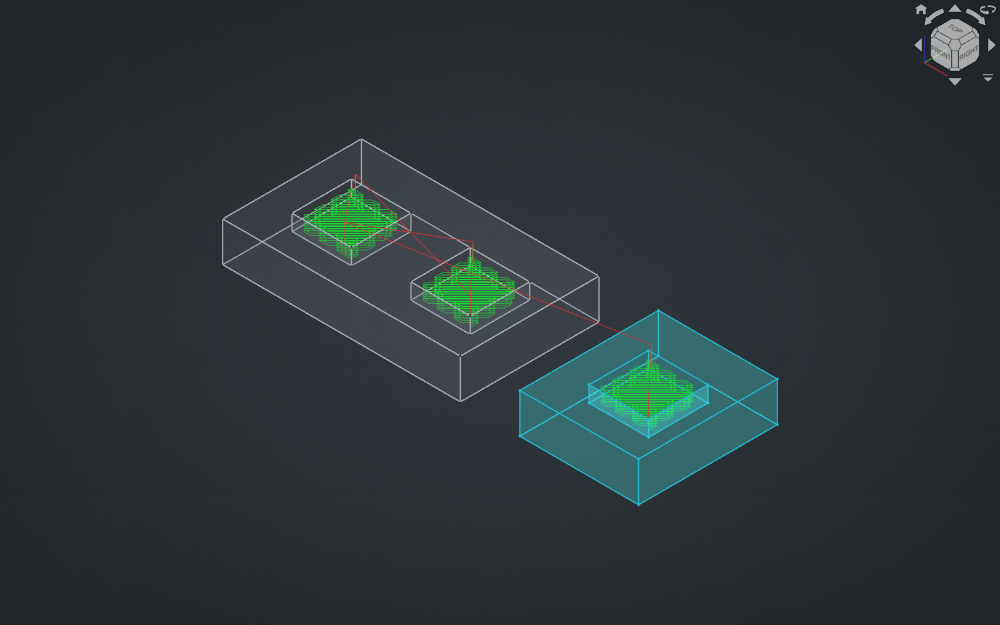
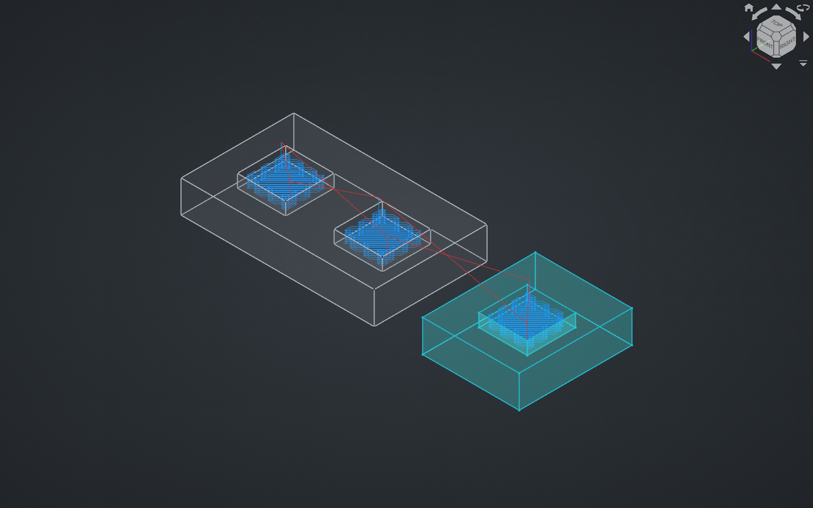
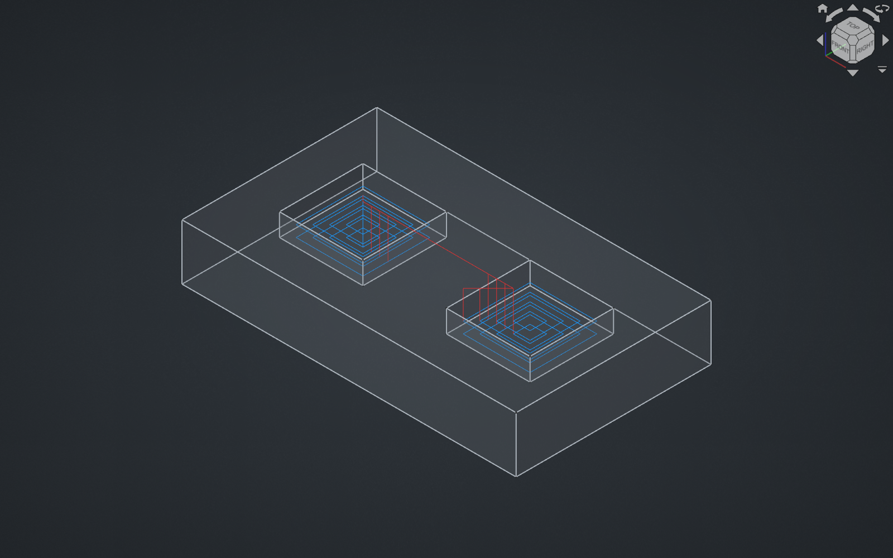
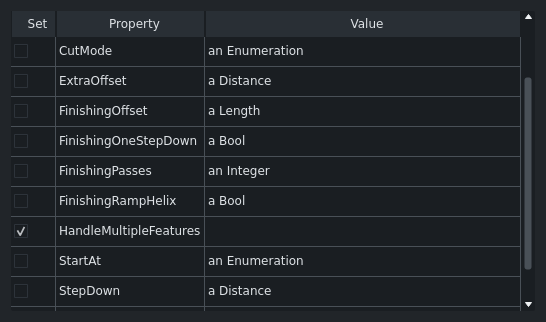

This review is waiting for approval. The comment below is what would be posted.
TL;DR
Unit tests pass (1828 tests, OK). Profile toolpaths A/B identical.
1. The Setup Sheet entry for 3D Pocket is broken
Area.initOperation assigns the enumeration as a tuple:
obj.HandleMultipleFeatures = ("Individually", "Collectively")
The Setup Sheet builds a prototype object, and SetupSheetOpPrototype.PropertyEnumeration.setValue
only records the enum list when it is a list (if list == type(value)). With a tuple the list is
stored as the value and self.enums is never created. Pocket.SetupProperties() still registers
the property, so the row is displayed and is unusable.
Repro: open a Job → edit the Setup Sheet → 3D Pocket page. The Handle Multiple Features Value cell is empty (every other enumeration shows "an Enumeration"); tick "Set" and click the cell:
File "Path/Base/Gui/SetupSheetOpPrototype.py", line 71, in widget
Path.Log.track(self.prop.name, self.prop.getEnumValues())
File "Path/Base/SetupSheetOpPrototype.py", line 97, in getEnumValues
return self.enums
AttributeError: 'PropertyEnumeration' object has no attribute 'enums'
No dropdown opens, so the default cannot be set. Assigning a list instead of a tuple fixes it.
2. Existing 3D Pocket operations get a different toolpath
3D Pocket defaults to Collectively and already does its own collective handling (it fuses the
selected faces per base object). Dropping the obj.Proxy.__module__ == "Path.Op.Profile" guard means
the generic compound step in opExecute now also runs for it whenever the op yields more than one
shape — e.g. base geometry on two model objects. The two models used to be finished one after the
other; now they are interleaved level by level.
Repro: a Job with two model objects, a 3D Pocket with pocket floors selected on both, StepDown 1 mm. Same file recomputed on both sides:
<details><summary>A/B numbers</summary>
| upstream/main | this PR | |
|---|---|---|
| moves | 681 | 689 |
| rapid travel | 1430.27 mm | 1783.03 mm |
| feed length | 6071.95 mm | 6125.19 mm |
| first cut X | 18.0 | 20.839 |
| cycle time | 00:08:07 | 00:08:32 |
</details>
If this is intended, it is worth saying so in the description — it changes saved jobs on reopen.
3. Profile loses its Setup Sheet default
HandleMultipleFeatures was dropped from areaOpProperties(), which is what builds
Profile.SetupProperties(), while PathAreaOp.SetupProperties() still returns []. So the Profile
page of the Setup Sheet no longer lists the setting, and a job that already stores
ProfileHandleMultipleFeatures = Collectively is ignored: a new Profile operation in that job comes
out Individually. Verified in a test job.
Moving the name into PathAreaOp.SetupProperties() (and removing the special case from
Pocket.SetupProperties()) would cover Profile, Pocket Shape and 3D Pocket consistently — after
finding 1 is fixed, otherwise the broken editor spreads to the other ops.
4. Operations in existing files never gain the property
It is added in initOperation only; Area.py has no opOnDocumentRestored hook and the name is not
in SetupProperties(). A Pocket Shape operation restored from a file saved before this PR still has
no HandleMultipleFeatures after a save/close/reopen cycle, so the new option is only available on
operations created after upgrading. Nothing crashes (both call sites use getattr(..., False)), but
existing pockets have to be re-created to use the feature.
Not in the PR description
.ts entries become unused.CAM unit tests with the PR applied: Ran 1828 tests · OK (skipped=13, expected failures=4)




HandleMultipleFeatures is moved out of Profile.py and Pocket.py into the shared Area base
operation (Path/Op/Area.py), and the "combine the shapes for Collectively" block in
Area.opExecute loses its obj.Proxy.__module__ == "Path.Op.Profile" guard. Every Area-based
operation therefore gets the property and the collective behaviour: Profile, Pocket Shape,
3D Pocket and Facing (MillFace).
Applied on top of upstream main in a test tree and built. Unit tests: Ran 1828 tests ... OK (skipped=13, expected failures=4).
Test setup (see the video): one Job with two model objects — a 120 × 70 × 20 mm plate with two 30 × 30 × 8 mm pockets, and a second 60 × 70 × 20 mm block with one pocket — a 6 mm end mill, a Pocket Shape operation on the two pocket floors of the first model, and a 3D Pocket operation with base geometry on both models.
A/B runs are the same document recomputed against upstream/main and against the PR branch.
Area.initOperation sets the enumeration with a tuple:
obj.HandleMultipleFeatures = ("Individually", "Collectively")
That is fine on a real document object, but the Setup Sheet builds a prototype object
(Path/Base/SetupSheetOpPrototype.py), and its PropertyEnumeration.setValue only records the
enum list when the value is a list:
def setValue(self, value):
if list == type(value):
self.enums = value
else:
super(PropertyEnumeration, self).setValue(value)
With a tuple the list is stored as the value and self.enums is never created. Pocket.py
still registers the property for the Setup Sheet (SetupProperties() returns
PathPocketBase.SetupProperties() + ["HandleMultipleFeatures"]), so the row is shown, and:
setupsheet_pocket3d.png);File "Path/Base/Gui/SetupSheetOpPrototype.py", line 71, in widget
Path.Log.track(self.prop.name, self.prop.getEnumValues())
File "Path/Base/SetupSheetOpPrototype.py", line 97, in getEnumValues
return self.enums
AttributeError: 'PropertyEnumeration' object has no attribute 'enums'
No dropdown opens, so the default cannot be set at all. On upstream main initPocketOp set the
enums from a list and the dropdown worked.
Checked directly:
op = SetupSheet._RegisteredOps["Pocket3D"]
p = op.prototype("Pocket3D").getProperty("HandleMultipleFeatures")
p.getValue() # ['Individually', 'Collectively'] <- the list is the value
p.getEnumValues() # AttributeError
Using a list instead of a tuple fixes it.
3D Pocket defaults to Collectively, and it already implements its own collective handling
(it fuses the selected faces into one removal solid per base object). With the module guard
removed, the generic "make one compound out of every shape" block in Area.opExecute now runs
on top of that whenever the operation produces more than one shape — for example base geometry
on two different model objects.
Same file, recomputed on both sides (StepDown 1 mm, 8 levels):
| upstream/main | this PR | |
|---|---|---|
| moves | 681 | 689 |
| rapid travel | 1430.27 mm | 1783.03 mm |
| feed length | 6071.95 mm | 6125.19 mm |
| first cut X | 18.0 | 20.839 |
| cycle time | 00:08:07 | 00:08:32 |
The two models used to be finished one after the other; now they are interleaved level by level
(p3d_main.png vs p3d_pr.png, and the last two steps of the video). Nothing in the document
changed — just opening and recomputing an old job gives a longer path. The PR description does
not mention any change to 3D Pocket.
Profile was A/B'd in the same document and is byte-for-byte identical, as expected.
HandleMultipleFeatures was removed from ObjectProfile.areaOpProperties(), and
Profile.SetupProperties() is built from that list, while PathAreaOp.SetupProperties() still
returns []. So the property is no longer registered for the Profile operation:
SetupSheet._RegisteredOps["Profile"].properties()
# ['Direction', 'OffsetExtra', 'processHoles', ..., 'FinishingPasses'] # no HandleMultipleFeatures
Two consequences, both verified:
ProfileHandleMultipleFeatures = Collectively is silently ignored —
a new Profile operation created in that job comes out Individually.Adding the property to PathAreaOp.SetupProperties() (and dropping the special case in
Pocket.SetupProperties()) would cover Profile, Pocket Shape and 3D Pocket consistently — and
fixing finding 1 is a prerequisite, otherwise registering it just spreads the broken editor to
more operations.
The property is added in initOperation, which only runs when an operation is created. There is
no opOnDocumentRestored hook in Area.py and the property is not in SetupProperties(), so an
operation restored from a file saved before this PR keeps its old property set.
Verified: a document whose Pocket Shape operation has no HandleMultipleFeatures (i.e. any file
saved with 1.0/1.1 or current main) still has no such property after being saved, closed and
reopened — hasattr(op, "HandleMultipleFeatures") == False. The new option is only available on
operations created after upgrading; existing pockets have to be deleted and re-made.
Nothing crashes, because the two call sites in Area.opExecute use getattr(..., False).
| Change | Tested |
|---|---|
Facing (MillFace) operations also gain a HandleMultipleFeatures property (it derives from PocketBase → Area). Default Individually, visible in the property editor. |
Tested — the property appears; with two base faces the path is identical in both modes (Facing already merges the faces itself), so it is a new control that does nothing. |
| 3D Pocket toolpaths change in existing documents (finding 2). | Tested — A/B numbers above. |
| The Profile Setup Sheet entry is removed, and a stored Profile default stops being applied (finding 3). | Tested. |
| The Setup Sheet editor for 3D Pocket is broken (finding 1). | Tested. |
| The property moves from the "Profile" / "Pocket" group to the "Path" group in the property editor. Operations restored from older files keep the old group, so the same setting sits in different groups depending on the file's age. | Tested — new operations report group Path. |
Default values: new Pocket Shape operations default to Individually; 3D Pocket still defaults to Collectively and Profile to Individually. |
Tested. |
| Existing Pocket Shape operations do not gain the new property (finding 4). | Tested. |
The translated enum labels (translate("PathProfile", "Collectively") etc.) are deleted; the base class registers the raw strings only. |
Not tested at runtime — no task panel exposes this property, only the property editor, which shows raw enum values anyway, so there should be no visible loss. The existing .ts entries for these strings become unused. |
Pocket.SetupProperties() still hard-codes "HandleMultipleFeatures" while PathAreaOp.SetupProperties() returns [] — the inconsistency behind findings 1 and 3. |
Tested. |
demo.mp4 — the test setup, Pocket Shape Individually vs the new Collectively, then the same
3D Pocket operation on upstream main and with the PR.setupsheet_pocket3d.png — the broken Setup Sheet row.p3d_main.png / p3d_pr.png — the 3D Pocket path before and after.ps_col.png — the new Collectively option on Pocket Shape.